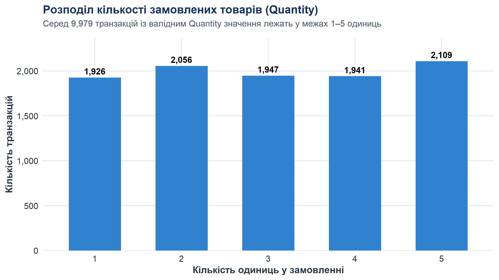
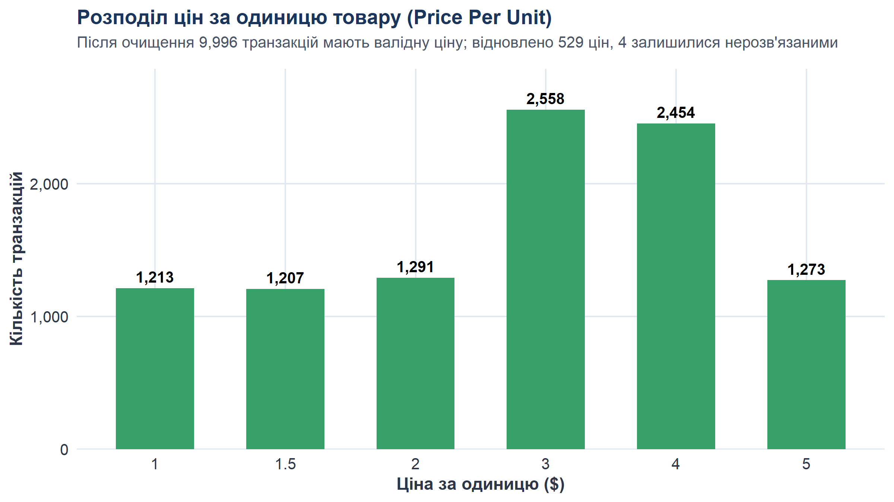
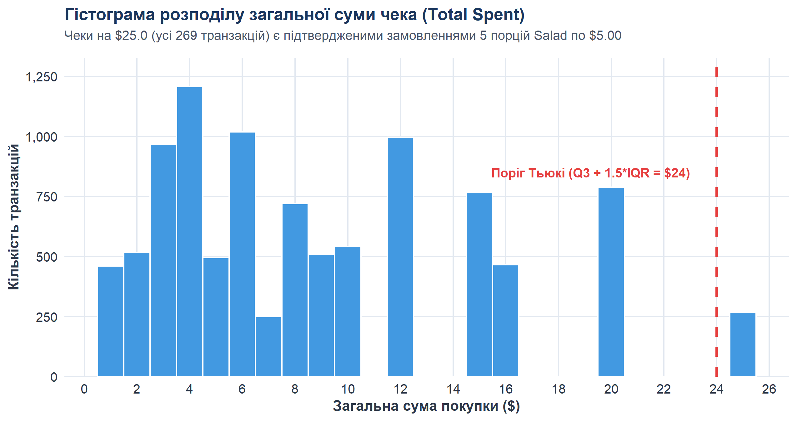
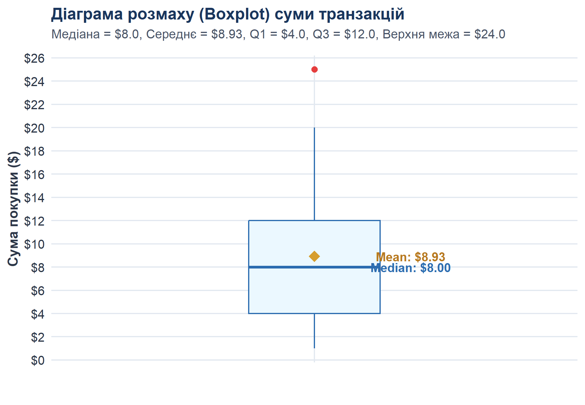
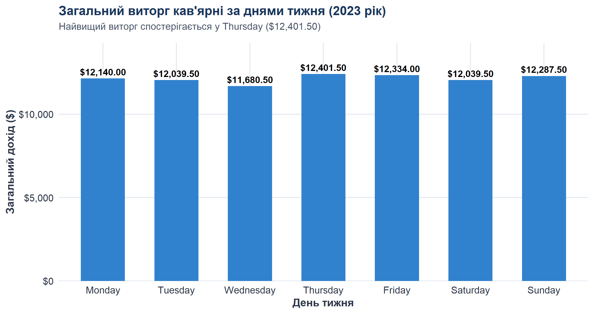
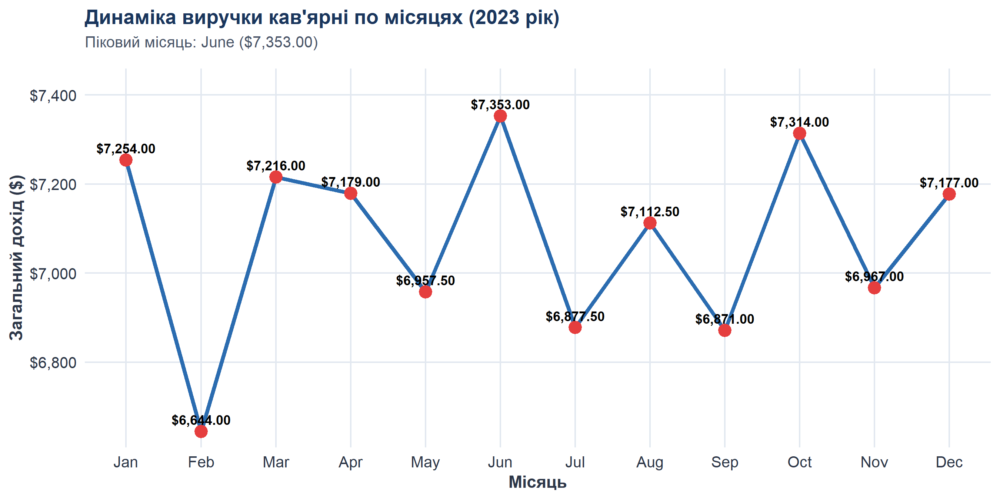

lab_data_cleaning_cafe_sales_self_guided_r.ipynb
cafe_sales_data_cleaning.Rdata/raw/dirty_cafe_sales.csvdata/processed/cleaned_cafe_sales.csvdata/processed/suspicious_cafe_sales.csv
report/results_summary.csvreport/execution_output.txtМетою цієї лабораторної роботи є проведення всебічного аудиту якості сирих транзакційних даних мережі кав’ярень, виявлення дефектів обліку (технічних псевдопропусків, помилок касового логування, порушень цілісності типів даних та узгодженості формули чека), побудова повністю детермінованого конвеєра очищення (Data Cleaning Pipeline) на мові R, оцінка фінансового впливу реконструкції даних на виручку закладу та підготовка набору ознак для машинного навчання із суворим запобіганням витоку даних (Data Leakage).
Початковий файл data/raw/dirty_cafe_sales.csv містить
журнал продажів кав’ярні обсягом 10 000 рядків та
8 стовпців. При прямому читанні бібліотекою
readr::read_csv() порожні комірки CSV інтерпретуються як
системні NA, тоді як технічні маркери помилок
("ERROR", "UNKNOWN") зчитуються як звичайний
текст. Через це середовище R автоматично розпізнає всі 8 колонок як
текстові (character).
| Поле | Початковий тип | Очікуваний тип | Призначення та семантика |
|---|---|---|---|
Transaction ID |
character |
character (унікальний ключ) |
Унікальний номер транзакції (формат TXN_XXXXXXX) |
Item |
character |
factor / categorical |
Назва замовленої позиції меню кав’ярні |
Quantity |
character |
integer / numeric |
Кількість замовлених одиниць товару в чеку |
Price Per Unit |
character |
numeric / double |
Ціна за одиницю товару в доларах США (USD) |
Total Spent |
character |
numeric / double |
Загальна сума покупки за чеком (USD) |
Payment Method |
character |
factor / categorical |
Спосіб оплати (готівка, платіжна картка, цифровий гаманець) |
Location |
character |
factor / categorical |
Канал обслуговування (на винос / Takeaway чи в закладі / In-store) |
Transaction Date |
character |
Date (YYYY-MM-DD) |
Календарна дата здійснення операції |
| Бібліотека | Версія | Призначення у лабораторній роботі |
|---|---|---|
readr |
2.2.0 | Швидкий імпорт CSV із фіксацією типів
(col_types = cols(.default = "c")) та експорт фінальних
наборів |
dplyr |
1.2.1 | Маніпуляція даними, фільтрація, створення нових ознак
(mutate), групування та агрегація
(summarise) |
tidyr |
1.3.2 | Структурування даних та робота з пропущеними значеннями |
stringr |
1.6.0 | Обробка рядкових даних, очищення від пробілів (trimws)
та маніпуляції з маркерами |
lubridate |
1.9.5 | Парсинг текстових дат у календарний формат (ymd),
виділення року, місяця, дня та дня тижня |
ggplot2 |
4.0.3 | Побудова публікаційних аналітичних візуалізацій (гістограми, діаграми розмаху, стовпчикові графіки) |
scales |
1.4.0 | Форматування числових шкал (грошові позначення, роздільники тисяч) на графіках |
Розмірність таблиці, назви стовпців, фактичні типи в R, перші та
останні записи, зведена описова статистика та наявність системних
NA одразу після імпорту.
sales_raw <- read_csv("data/raw/dirty_cafe_sales.csv", col_types = cols(.default = "c"), show_col_types = FALSE)
sales_raw_snapshot <- sales_raw # Immutability check
dim(sales_raw)
sapply(sales_raw, class)
colSums(is.na(sales_raw))character.NA, зафіксовані одразу після імпорту порожніх
комірок CSV:
Transaction ID: 0Item: 333Quantity: 138Price Per Unit: 179Total Spent: 173Payment Method: 2 579Location: 3 265Transaction Date: 159Частина дефектів (порожні комірки) уже під час імпорту набула
системного статусу NA, тоді як текстові маркери
ERROR та UNKNOWN залишилися звичайними
рядками. 7 із 8 колонок містять дефекти і потребують глибокого аудиту.
Єдиний стовпець без дефектів — Transaction ID (10 000
валідних унікальних номерів).
Частота появи кожного типу дефекту: системні NA, порожні
рядки "", службові маркери "ERROR",
"UNKNOWN".
| Поле | Formal NA | Порожні рядки | Маркер ERROR | Маркер UNKNOWN | Всього дефектів | Частка дефектів |
|---|---|---|---|---|---|---|
Transaction ID |
0 | 0 | 0 | 0 | 0 | 0.00% |
Item |
333 | 0 | 292 | 344 | 969 | 9.69% |
Quantity |
138 | 0 | 170 | 171 | 479 | 4.79% |
Price Per Unit |
179 | 0 | 190 | 164 | 533 | 5.33% |
Total Spent |
173 | 0 | 164 | 165 | 502 | 5.02% |
Payment Method |
2 579 | 0 | 306 | 293 | 3 178 | 31.78% |
Location |
3 265 | 0 | 358 | 338 | 3 961 | 39.61% |
Transaction Date |
159 | 0 | 142 | 159 | 460 | 4.60% |
Діапазони значень, квантилі, середні величини та відповідність пар
Item -> Price офіційному прейскуранту кав’ярні.
Cookie, Tea, Coffee,
Salad).
Виконання рівності
Total Spent == Quantity * Price Per Unit для всіх
спостережень, де всі три поля присутні одночасно.
Усі доступні для прямої перевірки чеки ідеально підтверджують роботу касового алгоритму. Це дає строге математичне обґрунтування для детермінованого відновлення втрачених значень за формулою чека.
При аналізі записів, де відома лише сума чека
Total Spent, але втрачені і Quantity, і
Price Per Unit, було досліджено всі можливі добутки цін
меню {1.0, 1.5, 2.0, 3.0, 4.0, 5.0} на допустимі кількості
{1, 2, 3, 4, 5}:
| Сума чека (Total) | Кількість можливих пар (Price, Quantity) | Єдина допустима комбінація | Можливість відновлення |
|---|---|---|---|
| 25.00 USD | 1 | Price = 5.0, Quantity = 5 (Salad) | Повне детерміноване відновлення |
| 9.00 USD | 1 | Price = 3.0, Quantity = 3 | Відновлення Q=3, P=3 (Item залишається NA) |
| 20.00 USD | 2 | P=4 * Q=5 АБО P=5 * Q=4 | Неоднозначно (залишається нерозв’язаним NA) |
Transaction ID: 0 (усі 10 000
унікальні).Payment Method
та Location мають уніфікований регістр і не містять
синтаксичних помилок; дефекти представлені виключно пропусками та
маркерами ERROR/UNKNOWN.UNKNOWN, 142 ERROR).2023-01-01 по
2023-12-31 (строго 2023 рік).
Year,
Month, Month_Num, Day,
Day_of_Week.
Розрахунок міжквартильного розмаху (IQR) для числових змінних та
візуалізація розподілу Total Spent.
Нижче наведено розподіли ознак та ілюстрацію межі викидів:

Рис. 1. Розподіл кількості замовлених товарів у чеку (Quantity).
Рис. 2. Розподіл вартості одиниці товару за меню кав’ярні (Price Per Unit).
Рис. 3. Гістограма сум чеків (Total Spent) із підсвічуванням формальних викидів IQR.
Рис. 4. Діаграма розмаху (Boxplot) суми транзакцій.Очищення реалізовано у вигляді строго детермінованого неруйнівного конвеєра:
[Raw CSV]
│
▼
1. Стандартизація маркерів (to_na) та числовий парсинг
│
▼
2. Відновлення Price з відомого Item (479 цін)
│
▼
3. Відновлення Price з Total / Quantity за меню (48 цін)
│
▼
4. Унікальне відновлення для Total=25 (P=5, Q=5) та Total=9 (P=3, Q=3) (2 чеки)
│
▼
5. Відновлення Item за унікальними цінами $1, $1.5, $2, $5 (490 товарів)
│
▼
6. Відновлення Quantity з Total / Price (456 кількостей)
│
▼
7. Розрахунок calculated_total та відновлення Total Spent (479 сум)
│
▼
8. Контрольна валідація узгодженості сум (9 976 з 9 976, 100.00%)
│
▼
9. Календарний Feature Engineering та формування прапорців якостіhad_any_raw_defect: рядок спочатку містив дефект
(6 911 рядків);was_item_recovered: відновлено товар (490
рядків);was_price_recovered: відновлено ціну (529
рядків);was_quantity_recovered: відновлено кількість
(458 рядків);was_total_recovered: відновлено суму чека (479
рядків).has_missing_item: 479 рядків (ціни
$3.0 та $4.0 або відсутня ціна);has_missing_quantity: 21 рядок;has_missing_price: 4 рядки;has_missing_total: 23 рядки;has_missing_payment: 3 178
рядків;has_missing_location: 3 961
рядок;has_missing_date: 460 рядків;is_suspicious: 6 229 рядків (наявність
хоча б одного нерозв’язаного поля; саме ці рядки експортуються у
suspicious_cafe_sales.csv).
| Проблема | Як виявлено | Правило обробки (Дія) | Кількість елементів | Обґрунтування правила |
|---|---|---|---|---|
| Текстові маркери помилок у числових стовпцях | Аудит типів і as.numeric() |
Конвертація в системний NA |
1 514 комірок (1 456 рядків) | Текст "ERROR" не є числом; заміна на NA
уможливлює коректні обчислення |
Пропуски у сумі чека Total Spent |
Порівняння з Quantity * Price |
Розрахунок calculated_total |
479 рядків | Ліквідує штучну недооцінку виручки кав’ярні |
| Пропуски ціни при відомому товарі | Крос-таблиця Item та Price |
Підтягування фіксованої вартості меню | 479 рядків | Позиції меню мають суворо фіксовані ціни |
Пропуски ціни при відомих Quantity та
Total Spent
|
Аналіз залишку після кроку 1 | Розрахунок Price = Total / Quantity |
48 рядків | Частка точно відповідає прейскуранту меню ($1, $1.5, $2, $3, $4, $5) |
| Чеки без Q та P з унікальною сумою | Комбінаторика Price * Quantity |
5x5 для $25 та 3x3 для $9 | 2 рядки | Доведено математичну єдиність комбінацій |
| Пропуски товару при унікальній ціні | Аналіз прейскуранту меню | Відновлення Cookie, Tea, Coffee, Salad | 490 рядків | Ціни $1, $1.5, $2, $5 однозначно ідентифікують товар |
| Пропуски кількості при відомих Total та Price | Рівняння чека Total = Q * P |
Розрахунок Quantity = round(Total / Price) |
456 рядків | 100% узгодженість формули на валідних даних |
| Нерозпізнані дати | Спроба парсингу lubridate::ymd() |
Конвертація в NA, створення прапорця |
460 рядків | Неможливо достовірно вгадати дату візиту клієнта |
| Пропуски у способі оплати | Аудит унікальних категорій | Конвертація в NA, якісний прапорець |
3 178 рядків | Приписування оплати карткою чи готівкою було б фальсифікацією |
| Пропуски у локації замовлення | Аудит унікальних категорій | Конвертація в NA, якісний прапорець |
3 961 рядок | Зберігає коректну ринкову частку каналів продажу |
| Формальні викиди суми чека (25.00 USD) | Правило 1.5 * IQR Тьюкі | Збереження в наборі без змін | 269 рядків | Замовлення 5 порцій Salad по 5.00 USD є абсолютно валідним |
| Метрика | Raw Data | Cleaned Data | Абсолютна різниця | Коментар |
|---|---|---|---|---|
| Загальна кількість записів | 10 000 | 10 000 | 0 | Рядки не видалялися, структура збережена |
| Валідні транзакції з сумою | 9 498 | 9 977 | +479 | Відновлено за формулою чека |
| Загальний виторг кав’ярні | 84 763.50 USD | 89 096.00 USD | +4 332.50 USD | Приріст виручки становить +5.11% |
Пропущені назви товарів (Item) |
969 | 479 | -490 | Відновлено позиції з унікальною ціною меню |
Пропущені ціни (Price Per Unit) |
533 | 4 | -529 | Відновлено з меню та формули Total / Quantity |
Пропущена кількість (Quantity) |
479 | 21 | -458 | Відновлено як Total / Price та з унікальних сум |
Пропущена сума (Total Spent) |
502 | 23 | -479 | Відновлено як Quantity * Price |
| Пропущені способи оплати | 3 178 | 3 178 | 0 | Законсервовано як NA без припущень |
| Пропущені локації замовлення | 3 961 | 3 961 | 0 | Законсервовано як NA без припущень |
| Невалідні дати | 460 | 460 | 0 | Зафіксовано як NA з прапорцем |
| Повні дублікати рядків | 0 | 0 | 0 | Відсутні в обох версіях |
Повторні Transaction ID |
0 | 0 | 0 | Усі ID залишаються унікальними |
Аналіз матриці пропусків показав: 1. 475 рядків:
відомі Quantity, Price та Total,
пропущено лише Item (ціни $3.0 або $4.0); 2. 20
рядків: відомі Item та Price,
пропущено Quantity та Total; 3. 3
рядки: відома Quantity, пропущено
Item, Price та Total; 4.
1 рядок: відомий Total ($20), пропущено
Item, Quantity та Price.
Важливий висновок: У датасеті немає жодного рядка, де одночасно були б втрачені всі 4 атрибути замовлення.
Управлінське питання: “Який товар потрібно закуповувати найбільше?”
Три рейтинги розраховано незалежно, що виключає штучне заниження транзакцій при відсутності суми:
| Товар (Item) | Транзакцій (Ранг) | Продано одиниць (Ранг) | Загальний дохід, USD (Ранг) |
|---|---|---|---|
| Salad | 1 273 [Ранг 2] | 3 824 [Ранг 2] | 19 120.00 [Ранг 1] |
| Sandwich | 1 131 [Ранг 7] | 3 429 [Ранг 7] | 13 716.00 [Ранг 2] |
| Smoothie | 1 096 [Ранг 8] | 3 336 [Ранг 8] | 13 344.00 [Ранг 3] |
| Juice | 1 171 [Ранг 5] | 3 505 [Ранг 5] | 10 515.00 [Ранг 4] |
| Cake | 1 139 [Ранг 6] | 3 468 [Ранг 6] | 10 404.00 [Ранг 5] |
| Coffee | 1 291 [Ранг 1] | 3 904 [Ранг 1] | 7 808.00 [Ранг 6] |
| Tea | 1 207 [Ранг 4] | 3 650 [Ранг 3] | 5 475.00 [Ранг 7] |
| Cookie | 1 213 [Ранг 3] | 3 598 [Ранг 4] | 3 598.00 [Ранг 8] |
| Спосіб оплати | Транзакцій (усього) | Частка транзакцій | Транзакцій з виручкою | Загальний виторг (USD) | Частка виручки | Середній чек (USD) | Медіанний чек (USD) |
|---|---|---|---|---|---|---|---|
| Credit Card | 2 273 | 33.32% | 2 269 | 20 466.00 | 33.40% | 9.02 | 8.00 |
| Digital Wallet | 2 291 | 33.58% | 2 285 | 20 414.00 | 33.31% | 8.93 | 8.00 |
| Cash | 2 258 | 33.10% | 2 254 | 20 402.50 | 33.29% | 9.05 | 8.00 |
| Разом відомих | 6 822 | 100.00% | 6 808 | 61 282.50 | 100.00% | 9.00 | 8.00 |
NA).| День тижня | Транзакцій (дата) | Транзакцій з виручкою | Загальний дохід (USD) | Середній чек (USD) |
|---|---|---|---|---|
| Monday | 1 382 | 1 379 | 12 140.00 | 8.80 |
| Tuesday | 1 311 | 1 308 | 12 039.50 | 9.20 |
| Wednesday | 1 341 | 1 339 | 11 680.50 | 8.72 |
| Thursday | 1 380 | 1 376 | 12 401.50 | 9.01 |
| Friday | 1 388 | 1 383 | 12 334.00 | 8.92 |
| Saturday | 1 358 | 1 354 | 12 039.50 | 8.89 |
| Sunday | 1 380 | 1 378 | 12 287.50 | 8.92 |

Рис. 5. Динаміка виручки за днями тижня.| Місяць | Транзакцій (дата) | Транзакцій з виручкою | Загальний дохід (USD) | Середній чек (USD) |
|---|---|---|---|---|
| 01 January | 818 | 815 | 7 254.00 | 8.90 |
| 02 February | 727 | 726 | 6 644.00 | 9.15 |
| 03 March | 827 | 826 | 7 216.00 | 8.74 |
| 04 April | 774 | 771 | 7 179.00 | 9.31 |
| 05 May | 777 | 773 | 6 957.50 | 9.00 |
| 06 June | 818 | 817 | 7 353.00 | 9.00 |
| 07 July | 791 | 789 | 6 877.50 | 8.72 |
| 08 August | 803 | 802 | 7 112.50 | 8.87 |
| 09 September | 788 | 786 | 6 871.00 | 8.74 |
| 10 October | 838 | 837 | 7 314.00 | 8.74 |
| 11 November | 784 | 784 | 6 967.00 | 8.89 |
| 12 December | 795 | 791 | 7 177.00 | 9.07 |

Рис. 6. Динаміка виручки кав’ярні по місяцях 2023 року.| Поле | Роль у ML | Чи можна подавати напряму? | Необхідна попередня обробка |
|---|---|---|---|
Transaction ID |
identifier / exclude |
Ні | Виключити з простору ознак (штучний ключ, що веде до overfitting) |
Item |
categorical feature |
Ні | One-Hot Encoding або Target Encoding; пропуски виділити класом
"Missing"
|
Quantity |
numeric feature / context-dependent |
Ні | Якщо кошик відомий — масштабування. Якщо прогноз до замовлення — ознака недоступна (leakage) |
Price Per Unit |
numeric feature / context-dependent |
Ні | Аналогічно до Quantity: відома лише після вибору товару клієнтом |
Payment Method |
categorical feature |
Ні | One-Hot Encoding; пропуски кодувати окремою бінарною категорією
"Unknown"
|
Location |
categorical feature |
Ні | Binary Encoding (Takeaway = 1, In-store =
0) або окремий клас пропуску |
Transaction Date |
datetime feature |
Ні | Виділити ознаки: день тижня, місяць, вихідний/робочий, циклічні sin/cos ознаки |
Total Spent |
target (y) |
Так | Цільова змінна для регресії; рядки без таргету вилучаються з train/test |
calculated_total |
exclude |
Ні | Категорично виключити. Створює 100% витік даних (Data Leakage) |
calculated_total у модель надає алгоритму точне
значення цільової змінної. Модель отримає вагу 1.0 і покаже фіктивний
R2 = 1.0, але не
матиме жодної прогнозної сили.
Quantity,
Price та Item ще не існують —
їх використання є грубим витоком інформації з майбутнього.
Quantity * Price.
| Поле | Кількість NA | Запропонована ML-стратегія | Теоретичне обґрунтування |
|---|---|---|---|
Item |
479 | Окрема категорія "Missing_Item" або вилучення |
Заміна на моду спотворить структуру попиту. Окремий клас зберігає інформацію про збій касового апарату. |
Quantity |
21 | Імпутація медіаною по навчальній вибірці (train set) | Пропусків мізерна частка (0.21%). Медіана (3 одиниці) мінімізує зміщення розподілу. |
Price Per Unit |
4 | Вилучення рядків | Залишилися в рядках без назви товару. 4 спостереження (0.04%) безпечно вилучити. |
Total Spent (Target) |
23 | Вилучення з навчального набору | Навчання моделі з учителем на штучно вигаданих значеннях таргету є неприпустимим. |
Payment Method |
3 178 | Створення окремої категорії "Unknown_Payment" |
Понад 31% пропусків. Вилучення знищило б третину даних, окрема категорія зберігає обсяг вибірки. |
Location |
3 961 | Створення окремої категорії "Unknown_Location" |
Майже 40% пропусків. Окремий клас дозволяє деревам рішень враховувати сам факт відсутності локації. |
Transaction Date |
460 | Вилучення для time-series / категорія "No_Date" |
Для моделей часових рядів дата обов’язкова; для статичних регресій дату замінюють категорією. |
Запобігання Data Leakage під час імпутації: Будь-які статистичні оцінки (медіана, середнє, мода) повинні розраховуватися виключно на навчальній вибірці (train set) після виконання train/test split.
Підсумковий запуск автоматизованих перевірок stopifnot()
у R підтвердив: - Сувора незмінність sales_raw
(immutability check): PASS (100% ідентичність первинному
знімку). - Розмірність sales_clean: 10 000
рядків, 28 колонок. - Типи даних: Quantity,
Price Per Unit, Total Spent,
calculated_total — numeric;
Transaction Date — Date. - Повних дублікатів
та повторних ID: 0. - Логічна узгодженість валідних сум
чека: 100.00% (9 976 із 9 976 перевірених). -
Залишкових маркерів "ERROR" або "UNKNOWN" у
числових стовпцях: 0. - Кількість рядків з неповними
даними (is_suspicious): 6 229.
У ході лабораторної роботи було проведено поглиблений аудит та повне детерміноване очищення набору даних транзакцій мережі кав’ярень Dirty Café Sales.
is_suspicious),
що дозволило зберегти всі 10 000 спостережень для аналізу без
необґрунтованого видалення рядків.Яка проблема в даних була найкритичнішою?
Найкритичнішою проблемою було маскування відсутніх значень та технічних
помилок текстовими маркерами (ERROR, UNKNOWN,
"") у стовпцях сум і цін. Це блокувало приведення типів,
унеможливлювало математичні операції та призводило до штучної втрати
5.11% виручки кав’ярні при прямому читанні файлу.
Яке ваше правило очистки було найбільш
дискусійним?
Найбільш дискусійним було детерміноване відновлення назви товару за його
унікальною ціною (1.0 USD -> Cookie, 1.5 USD -> Tea, 2.0 USD ->
Coffee, 5.0 USD -> Salad, відновлено 490 рядків). Альтернативою було
залишити всі ці значення як NA. Однак, оскільки прайс
кав’ярні є суворо фіксованим, відновлення було на 100% математично
обґрунтованим і повернуло в товарний аналіз 490 чеків без
вигадок.
Які записи ви свідомо не стали автоматично
“виправляти”?
Ми свідомо не заповнювали пропуски у способах оплати (3 178 рядків) та
локаціях (3 961 рядок) найчастішим значенням (модою). Також ми не
відновлювали назви товарів при цінах 3.0 USD (Cake чи Juice) та 4.0 USD
(Sandwich чи Smoothie), оскільки будь-яке таке рішення було б
фальсифікацією первинних даних.
Які результати змінилися найбільше після
очистки?
Найбільше змінився показник загальної виручки: з 84 763.50 USD у сирих
даних до 89 096.00 USD в очищених (+4 332.50 USD). Також зі списку
товарів було усунено фіктивні категорії-фантоми ERROR (292
рядки) та UNKNOWN (344 рядки).
Які невизначеності залишилися?
Залишилася значна частка невідомих способів оплати (31.78%) та локацій
(39.61%), 460 невідомих дат. Водночас у параметрах замовлення немає
жодного рядка, де одночасно були б втрачені всі 4 атрибути (Item,
Quantity, Price, Total).
Що могло б статися, якби на сирих даних одразу навчити ML-модель?
"ERROR" у числове
поле.calculated_total
призвело б до фатального Data Leakage та повної непридатності моделі в
продакшені.sales_raw <- read_csv("data/raw/dirty_cafe_sales.csv", col_types = cols(.default = "c"), show_col_types = FALSE)
sales_raw_snapshot <- sales_rawpseudo_counts <- sapply(sales_raw, function(x) sum(trimws(x) %in% c("", "ERROR", "UNKNOWN", "NA", "NULL")))Quantity_num <- suppressWarnings(as.numeric(sales_raw$Quantity))
Price_num <- suppressWarnings(as.numeric(sales_raw$`Price Per Unit`))
Total_num <- suppressWarnings(as.numeric(sales_raw$`Total Spent`))calculated_total <- Quantity_clean * Price_clean
is_total_consistent <- abs(Total_clean - calculated_total) < 1e-4Date_clean <- suppressWarnings(ymd(sales_raw$`Transaction Date`))
Day_of_Week <- wday(Date_clean, label = TRUE, abbr = FALSE, week_start = 1, locale = "C")
Month <- month(Date_clean, label = TRUE, abbr = FALSE, locale = "C")stopifnot(identical(sales_raw, sales_raw_snapshot))
stopifnot(nrow(sales_clean) == 10000)
stopifnot(all(checked_rows$is_total_consistent == TRUE))
stopifnot(!any(sales_clean$Item == "ERROR", na.rm = TRUE))write_csv(sales_clean, "data/processed/cleaned_cafe_sales.csv")
write_csv(suspicious_records, "data/processed/suspicious_cafe_sales.csv")
write_csv(results_summary_df, "report/results_summary.csv")